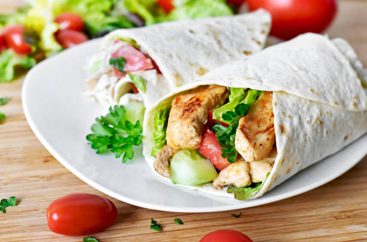

Chicken Wrap

Ingredients
- 4 Mission® Life Balance® Whole Wheat Tortillas
- 4 tablespoons light mayonnaise
- 1 cup lettuce, shredded
- 1 tomato, thinly sliced
- 1 red onion, thinly sliced
- 4 strips bacon fully cooked, microwave to crispy
- 1 avocado, peeled, pitted and sliced lengthwise
- 12 slices oven-roasted deli-sliced chicken breast
Directions
- Spread 1 tablespoon of mayonnaise over each tortilla
- To build 1 wrap: place lettuce on the center of the wrap.
Top lettuce
with tomato, onion, bacon, avocado and sliced chicken
- Fold in the left and right sides of the wrap towards the
center, and roll the bottom edge tortilla into a burrito shape
- Slice the wrap in half and serve
Extra
Original Recipe
Home